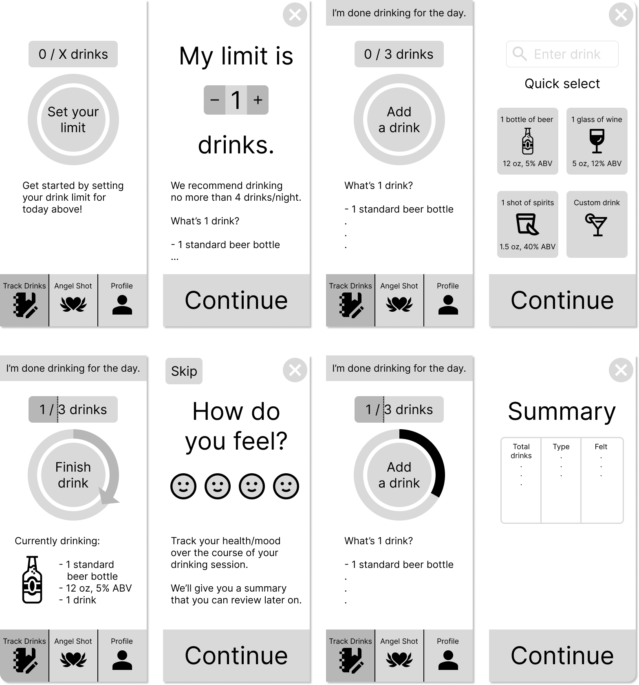
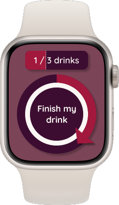
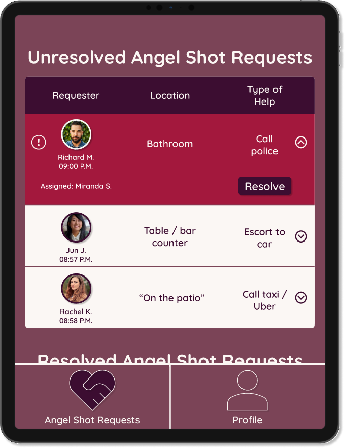

Youzi Mobile App
Reminiscing about designing a mobile experience from the ground up
—Overview— Setting the stage
The Angel Shot is a resource that some bars offer, utilizing keywords to allow patrons to inconspicuously request help in uncomfortable or dangerous situations. My goal was to design a mobile app experience around this idea and sought to tackle the problem of: How can I help users feel safer and more informed when they go out to drink?
Role
Solo UX designer
My work
· Figma prototyping· Competitor analysis
· Usability tests
Timeline
4 weeks
(Nov - Dec 2022)
—Initial research— Defining the constraints

Competitor analysis
I first researched how 4 other alcohol tracking apps were designed, which helped me understand what I should include or avoid in my own design based on usability and user familiarity. From this step, I noted the following important points:
- Parts of the copy were small and hard to read
- Drink tracking used scroll wheels and was finicky (size, oz vs. ml, ABV, date)
- One particular app was taken down for providing potentially inaccurate BAC values, going against App Store guidelines
- The CTAs and copy should be large and easy to use since users will be at various levels of intoxication
- Users should feel informed while also following App Store guidelines
—Starting the design process— Iterate, critique, repeat
Sketches
I started with sketching an initial design, and through critique from my client and colleagues, I realized that although I tried to include straightforward CTAs and large copy, the design felt busy, and there were too many moving parts.

Wireframing & low-fi prototype
On my next iteration, I focused on cleaning up the design. In addition, I more clearly defined the basic features of the app:
- Setting today's drink limit and recommendations for safe drinking
- Drink tracker with a quick select option and mood/wellness log
- Overall summary page that displays drinks and wellness
- "Angel shot" request flow to ask for help
- Reminder notifications for user to log drinks

—Honing in on a final solution— Conducting usability testing
Usability tests
After a few iterations, I held in-person usability tests to gather user feedback and insights, narrowing down my final design decisions for my hi-fi prototype. The overall feedback boiled down to:
- Reduce the number of taps in the overall flow
- Simplify the number of choices users need to make
- Consider accessibility when it comes to color scheme and button sizes
—Final prototype— My reflections & the hi-fi prototype
Conclusion & reflections
More doesn't always equate to a better experience: Although I wanted users to be informed, too much info or choices will discourage them from using the app. So, I had to prioritize what copy to keep and simplify the flow where possible.
Consider constraints from multiple angles: In the design process, new constraints may appear that weren't immediately recognizable at the start (e.g. App Store guidelines). Research to make sure that all angles are covered.
What I would do with more time: While I created a small reimagination of the app on a smartwatch (which may be more accessible) and the app from the bar staff's side, if I had more time for this project, I'd like to delve into these avenues further.


Design solutions
Users can stay informed through a drink/wellness tracker: Users can easily add and track drinks with just two taps. To track wellness, the user is simply asked to choose a thumbs-up or thumbs-down after each drink. Through a summary page, users can view their overall drinking trends, which can help them practice self-regulation and learn their limits.
The Angel Shot feature allows users to discreetly ask for help and feel secure: Users can request help from bar staff through a short 2-3 question flow that includes mic input as an option. For extra reassurance, users are shown the name and picture of the staff who will help them.
The Cherish app is a mobile companion: The app tries to build trust with the user through friendly copy and through periodical, gentle notification reminders that encourage the user to take care of themselves, drink water, etc.
Ultimately, Cherish emphasizes simplicity (minimal copy/choices), accessibility (large CTAs/font & voice input) while following App Store guidelines (no potentially inaccurate medical info).